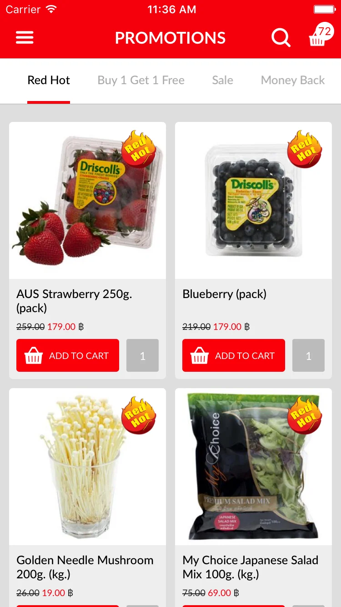

The brief and the build
What was needed
Ordering had to be quick enough to do between other things, and everything behind it — what is in stock, and what the store can actually deliver — had to be dependable enough to promise.
Work I did
I owned the product side, from the shape of the experience to what shipped: cutting the path to a paid order down to what it actually needs, prioritising the build with engineering, and putting it in front of real customers first.
